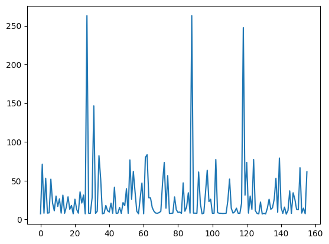
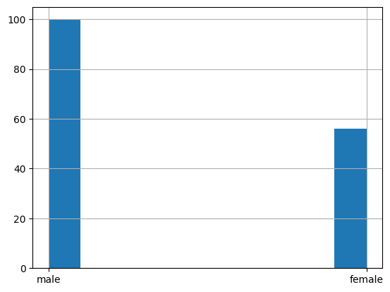

Pandas#

Pandas is a tool Python-based data analysis and manipulation
designed for working with heterogeneous data
well suited for data importing, aggregation and cleaning
quick visualizations of data
The best of pandas#
import pandas as pd
import numpy as np
df = pd.read_csv("titanic.csv", sep="\t")
df["Pclass"].value_counts(normalize=True)
Pclass
3 0.615385
1 0.192308
2 0.192308
Name: proportion, dtype: float64
type(df), df.shape
(pandas.core.frame.DataFrame, (156, 12))
df.head(10)
| PassengerId | Survived | Pclass | Name | Sex | Age | SibSp | Parch | Ticket | Fare | Cabin | Embarked | |
|---|---|---|---|---|---|---|---|---|---|---|---|---|
| 0 | 1 | 0 | 3 | Braund, Mr. Owen Harris | male | 22.0 | 1 | 0 | A/5 21171 | 7.2500 | NaN | S |
| 1 | 2 | 1 | 1 | Cumings, Mrs. John Bradley (Florence Briggs Th... | female | 38.0 | 1 | 0 | PC 17599 | 71.2833 | C85 | C |
| 2 | 3 | 1 | 3 | Heikkinen, Miss. Laina | female | 26.0 | 0 | 0 | STON/O2. 3101282 | 7.9250 | NaN | S |
| 3 | 4 | 1 | 1 | Futrelle, Mrs. Jacques Heath (Lily May Peel) | female | 35.0 | 1 | 0 | 113803 | 53.1000 | C123 | S |
| 4 | 5 | 0 | 3 | Allen, Mr. William Henry | male | 35.0 | 0 | 0 | 373450 | 8.0500 | NaN | S |
| 5 | 6 | 0 | 3 | Moran, Mr. James | male | NaN | 0 | 0 | 330877 | 8.4583 | NaN | Q |
| 6 | 7 | 0 | 1 | McCarthy, Mr. Timothy J | male | 54.0 | 0 | 0 | 17463 | 51.8625 | E46 | S |
| 7 | 8 | 0 | 3 | Palsson, Master. Gosta Leonard | male | 2.0 | 3 | 1 | 349909 | 21.0750 | NaN | S |
| 8 | 9 | 1 | 3 | Johnson, Mrs. Oscar W (Elisabeth Vilhelmina Berg) | female | 27.0 | 0 | 2 | 347742 | 11.1333 | NaN | S |
| 9 | 10 | 1 | 2 | Nasser, Mrs. Nicholas (Adele Achem) | female | 14.0 | 1 | 0 | 237736 | 30.0708 | NaN | C |
df.describe()
| PassengerId | Survived | Pclass | Age | SibSp | Parch | Fare | |
|---|---|---|---|---|---|---|---|
| count | 156.000000 | 156.000000 | 156.000000 | 126.000000 | 156.000000 | 156.000000 | 156.000000 |
| mean | 78.500000 | 0.346154 | 2.423077 | 28.141508 | 0.615385 | 0.397436 | 28.109587 |
| std | 45.177428 | 0.477275 | 0.795459 | 14.613880 | 1.056235 | 0.870146 | 39.401047 |
| min | 1.000000 | 0.000000 | 1.000000 | 0.830000 | 0.000000 | 0.000000 | 6.750000 |
| 25% | 39.750000 | 0.000000 | 2.000000 | 19.000000 | 0.000000 | 0.000000 | 8.003150 |
| 50% | 78.500000 | 0.000000 | 3.000000 | 26.000000 | 0.000000 | 0.000000 | 14.454200 |
| 75% | 117.250000 | 1.000000 | 3.000000 | 35.000000 | 1.000000 | 0.000000 | 30.371850 |
| max | 156.000000 | 1.000000 | 3.000000 | 71.000000 | 5.000000 | 5.000000 | 263.000000 |
df.info()
<class 'pandas.core.frame.DataFrame'>
RangeIndex: 156 entries, 0 to 155
Data columns (total 12 columns):
# Column Non-Null Count Dtype
--- ------ -------------- -----
0 PassengerId 156 non-null int64
1 Survived 156 non-null int64
2 Pclass 156 non-null int64
3 Name 156 non-null object
4 Sex 156 non-null object
5 Age 126 non-null float64
6 SibSp 156 non-null int64
7 Parch 156 non-null int64
8 Ticket 156 non-null object
9 Fare 156 non-null float64
10 Cabin 31 non-null object
11 Embarked 155 non-null object
dtypes: float64(2), int64(5), object(5)
memory usage: 14.8+ KB
Select columns#
Use syntax df[[col1, ..., colN]]
df['Age']
0 22.0
1 38.0
2 26.0
3 35.0
4 35.0
...
151 22.0
152 55.5
153 40.5
154 NaN
155 51.0
Name: Age, Length: 156, dtype: float64
df[['Age']]
| Age | |
|---|---|
| 0 | 22.0 |
| 1 | 38.0 |
| 2 | 26.0 |
| 3 | 35.0 |
| 4 | 35.0 |
| ... | ... |
| 151 | 22.0 |
| 152 | 55.5 |
| 153 | 40.5 |
| 154 | NaN |
| 155 | 51.0 |
156 rows × 1 columns
type(df), type(df['Age']), type(df[['Age']])
(pandas.core.frame.DataFrame,
pandas.core.series.Series,
pandas.core.frame.DataFrame)
Indexing#
df.sort_values("Age", inplace=True)
df.head(10)
| PassengerId | Survived | Pclass | Name | Sex | Age | SibSp | Parch | Ticket | Fare | Cabin | Embarked | |
|---|---|---|---|---|---|---|---|---|---|---|---|---|
| 78 | 79 | 1 | 2 | Caldwell, Master. Alden Gates | male | 0.83 | 0 | 2 | 248738 | 29.0000 | NaN | S |
| 119 | 120 | 0 | 3 | Andersson, Miss. Ellis Anna Maria | female | 2.00 | 4 | 2 | 347082 | 31.2750 | NaN | S |
| 7 | 8 | 0 | 3 | Palsson, Master. Gosta Leonard | male | 2.00 | 3 | 1 | 349909 | 21.0750 | NaN | S |
| 16 | 17 | 0 | 3 | Rice, Master. Eugene | male | 2.00 | 4 | 1 | 382652 | 29.1250 | NaN | Q |
| 43 | 44 | 1 | 2 | Laroche, Miss. Simonne Marie Anne Andree | female | 3.00 | 1 | 2 | SC/Paris 2123 | 41.5792 | NaN | C |
| 63 | 64 | 0 | 3 | Skoog, Master. Harald | male | 4.00 | 3 | 2 | 347088 | 27.9000 | NaN | S |
| 10 | 11 | 1 | 3 | Sandstrom, Miss. Marguerite Rut | female | 4.00 | 1 | 1 | PP 9549 | 16.7000 | G6 | S |
| 58 | 59 | 1 | 2 | West, Miss. Constance Mirium | female | 5.00 | 1 | 2 | C.A. 34651 | 27.7500 | NaN | S |
| 50 | 51 | 0 | 3 | Panula, Master. Juha Niilo | male | 7.00 | 4 | 1 | 3101295 | 39.6875 | NaN | S |
| 24 | 25 | 0 | 3 | Palsson, Miss. Torborg Danira | female | 8.00 | 3 | 1 | 349909 | 21.0750 | NaN | S |
df.tail(8)
| PassengerId | Survived | Pclass | Name | Sex | Age | SibSp | Parch | Ticket | Fare | Cabin | Embarked | |
|---|---|---|---|---|---|---|---|---|---|---|---|---|
| 101 | 102 | 0 | 3 | Petroff, Mr. Pastcho ("Pentcho") | male | NaN | 0 | 0 | 349215 | 7.8958 | NaN | S |
| 107 | 108 | 1 | 3 | Moss, Mr. Albert Johan | male | NaN | 0 | 0 | 312991 | 7.7750 | NaN | S |
| 109 | 110 | 1 | 3 | Moran, Miss. Bertha | female | NaN | 1 | 0 | 371110 | 24.1500 | NaN | Q |
| 121 | 122 | 0 | 3 | Moore, Mr. Leonard Charles | male | NaN | 0 | 0 | A4. 54510 | 8.0500 | NaN | S |
| 126 | 127 | 0 | 3 | McMahon, Mr. Martin | male | NaN | 0 | 0 | 370372 | 7.7500 | NaN | Q |
| 128 | 129 | 1 | 3 | Peter, Miss. Anna | female | NaN | 1 | 1 | 2668 | 22.3583 | F E69 | C |
| 140 | 141 | 0 | 3 | Boulos, Mrs. Joseph (Sultana) | female | NaN | 0 | 2 | 2678 | 15.2458 | NaN | C |
| 154 | 155 | 0 | 3 | Olsen, Mr. Ole Martin | male | NaN | 0 | 0 | Fa 265302 | 7.3125 | NaN | S |
# access by index
df.iloc[78]
PassengerId 54
Survived 1
Pclass 2
Name Faunthorpe, Mrs. Lizzie (Elizabeth Anne Wilkin...
Sex female
Age 29.0
SibSp 1
Parch 0
Ticket 2926
Fare 26.0
Cabin NaN
Embarked S
Name: 53, dtype: object
# access by label
df.loc[78]
PassengerId 79
Survived 1
Pclass 2
Name Caldwell, Master. Alden Gates
Sex male
Age 0.83
SibSp 0
Parch 2
Ticket 248738
Fare 29.0
Cabin NaN
Embarked S
Name: 78, dtype: object
# multiple indexing
df.loc[[78, 79, 100], ["Age", "Cabin"]]
| Age | Cabin | |
|---|---|---|
| 78 | 0.83 | NaN |
| 79 | 30.00 | NaN |
| 100 | 28.00 | NaN |
pd.Series#
1-d slice of dataframes has type pd.Series
df["Age"].head(5).values
array([0.83, 2. , 2. , 2. , 3. ])
Get access to index
df["Age"].head(5).index
Index([78, 119, 7, 16, 43], dtype='int64')
Creating pd.Series#
pd.Series([1, 2, 3], index=["Red", "Green", "Blue"])
Red 1
Green 2
Blue 3
dtype: int64
pd.Series(1, index=["Red", "Green", "Blue"])
Red 1
Green 1
Blue 1
dtype: int64
Convert Series to DataFrame
s = pd.Series([1, 2, 3], index=["Red", "Green", "Blue"])
type(s.to_frame("Values"))
pandas.core.frame.DataFrame
NaN’s#
df["Cabin"].head(10)
78 NaN
119 NaN
7 NaN
16 NaN
43 NaN
63 NaN
10 G6
58 NaN
50 NaN
24 NaN
Name: Cabin, dtype: object
df["Cabin"].dropna().head(10)
10 G6
27 C23 C25 C27
136 D47
102 D26
151 C2
88 C23 C25 C27
97 D10 D12
118 B58 B60
139 B86
75 F G73
Name: Cabin, dtype: object
df["Cabin"].fillna(3).head(10)
78 3
119 3
7 3
16 3
43 3
63 3
10 G6
58 3
50 3
24 3
Name: Cabin, dtype: object
df["Cabin"].fillna(method="bfill").head(10)
78 G6
119 G6
7 G6
16 G6
43 G6
63 G6
10 G6
58 C23 C25 C27
50 C23 C25 C27
24 C23 C25 C27
Name: Cabin, dtype: object
pd.isna(df["Cabin"]).head(10)
78 True
119 True
7 True
16 True
43 True
63 True
10 False
58 True
50 True
24 True
Name: Cabin, dtype: bool
Apply#
def dummpy_example(row):
return row['Sex'] * row['Pclass']
df['dummy_example'] = df.apply(dummpy_example, axis=1)
df.tail(3)
| PassengerId | Survived | Pclass | Name | Sex | Age | SibSp | Parch | Ticket | Fare | Cabin | Embarked | dummy_example | |
|---|---|---|---|---|---|---|---|---|---|---|---|---|---|
| 128 | 129 | 1 | 3 | Peter, Miss. Anna | female | NaN | 1 | 1 | 2668 | 22.3583 | F E69 | C | femalefemalefemale |
| 140 | 141 | 0 | 3 | Boulos, Mrs. Joseph (Sultana) | female | NaN | 0 | 2 | 2678 | 15.2458 | NaN | C | femalefemalefemale |
| 154 | 155 | 0 | 3 | Olsen, Mr. Ole Martin | male | NaN | 0 | 0 | Fa 265302 | 7.3125 | NaN | S | malemalemale |
Merge & Join#
df1 = df[["Age", "Parch"]].copy()
df2 = df[["Ticket", "Fare"]].copy()
df1.head()
| Age | Parch | |
|---|---|---|
| 78 | 0.83 | 2 |
| 119 | 2.00 | 2 |
| 7 | 2.00 | 1 |
| 16 | 2.00 | 1 |
| 43 | 3.00 | 2 |
df2.head()
| Ticket | Fare | |
|---|---|---|
| 78 | 248738 | 29.0000 |
| 119 | 347082 | 31.2750 |
| 7 | 349909 | 21.0750 |
| 16 | 382652 | 29.1250 |
| 43 | SC/Paris 2123 | 41.5792 |
Join df1 and df2 by index:
df1.join(df2).head(5)
| Age | Parch | Ticket | Fare | |
|---|---|---|---|---|
| 78 | 0.83 | 2 | 248738 | 29.0000 |
| 119 | 2.00 | 2 | 347082 | 31.2750 |
| 7 | 2.00 | 1 | 349909 | 21.0750 |
| 16 | 2.00 | 1 | 382652 | 29.1250 |
| 43 | 3.00 | 2 | SC/Paris 2123 | 41.5792 |
Join by value in column PassengerId:
df1 = df[["Age", "Parch", "PassengerId"]].copy()
df2 = df[["Ticket", "Fare", "PassengerId"]].copy()
pd.merge(df1, df2, on=["PassengerId"]).head(5)
| Age | Parch | PassengerId | Ticket | Fare | |
|---|---|---|---|---|---|
| 0 | 0.83 | 2 | 79 | 248738 | 29.0000 |
| 1 | 2.00 | 2 | 120 | 347082 | 31.2750 |
| 2 | 2.00 | 1 | 8 | 349909 | 21.0750 |
| 3 | 2.00 | 1 | 17 | 382652 | 29.1250 |
| 4 | 3.00 | 2 | 44 | SC/Paris 2123 | 41.5792 |
By default merge works as INNER JOIN:
pd.merge(df1, df2, on=["PassengerId"], how="inner").head(5)
| Age | Parch | PassengerId | Ticket | Fare | |
|---|---|---|---|---|---|
| 0 | 0.83 | 2 | 79 | 248738 | 29.0000 |
| 1 | 2.00 | 2 | 120 | 347082 | 31.2750 |
| 2 | 2.00 | 1 | 8 | 349909 | 21.0750 |
| 3 | 2.00 | 1 | 17 | 382652 | 29.1250 |
| 4 | 3.00 | 2 | 44 | SC/Paris 2123 | 41.5792 |
Groupping#
How to calculate average age among passengers of a particular class?
print("Pclass 1: ", df[df["Pclass"] == 1]["Age"].mean())
print("Pclass 2: ", df[df.Pclass == 2]["Age"].mean())
print("Pclass 3: ", df[df["Pclass"] == 3].Age.mean())
Pclass 1: 38.111111111111114
Pclass 2: 28.114827586206893
Pclass 3: 24.307142857142857
The same using group by:
df.groupby(["Pclass"])[["Age"]].mean()
| Age | |
|---|---|
| Pclass | |
| 1 | 38.111111 |
| 2 | 28.114828 |
| 3 | 24.307143 |
Groupping by several columns is also available:
df.groupby(["Survived", "Pclass"])
<pandas.core.groupby.generic.DataFrameGroupBy object at 0x121aa4690>
df.groupby(["Survived", "Pclass"])["PassengerId"].count()
Survived Pclass
0 1 18
2 16
3 68
1 1 12
2 14
3 28
Name: PassengerId, dtype: int64
df.groupby(["Survived", "Pclass"])[["PassengerId", "Cabin"]].count()
| PassengerId | Cabin | ||
|---|---|---|---|
| Survived | Pclass | ||
| 0 | 1 | 18 | 12 |
| 2 | 16 | 1 | |
| 3 | 68 | 1 | |
| 1 | 1 | 12 | 12 |
| 2 | 14 | 3 | |
| 3 | 28 | 2 |
df.groupby(["Survived", "Pclass"])[["PassengerId", "Fare"]].describe()
| PassengerId | Fare | ||||||||||||||||
|---|---|---|---|---|---|---|---|---|---|---|---|---|---|---|---|---|---|
| count | mean | std | min | 25% | 50% | 75% | max | count | mean | std | min | 25% | 50% | 75% | max | ||
| Survived | Pclass | ||||||||||||||||
| 0 | 1 | 18.0 | 82.555556 | 44.501450 | 7.0 | 40.75 | 88.5 | 117.00 | 156.0 | 18.0 | 80.035183 | 66.109719 | 27.7208 | 51.896875 | 61.27710 | 78.721875 | 263.0000 |
| 2 | 16.0 | 107.187500 | 44.842270 | 21.0 | 72.50 | 122.0 | 145.25 | 151.0 | 16.0 | 26.243225 | 20.039973 | 10.5000 | 12.881250 | 21.00000 | 27.017700 | 73.5000 | |
| 3 | 68.0 | 80.161765 | 43.375352 | 1.0 | 46.75 | 84.0 | 114.25 | 155.0 | 68.0 | 13.545954 | 9.905474 | 6.7500 | 7.895800 | 8.05000 | 15.309350 | 46.9000 | |
| 1 | 1 | 12.0 | 60.083333 | 50.118874 | 2.0 | 21.00 | 54.5 | 91.25 | 152.0 | 12.0 | 78.702075 | 66.649342 | 26.2833 | 35.500000 | 64.97915 | 77.546900 | 263.0000 |
| 2 | 14.0 | 62.000000 | 39.240874 | 10.0 | 27.50 | 58.0 | 83.50 | 134.0 | 14.0 | 20.707143 | 9.671110 | 10.5000 | 13.000000 | 19.50000 | 27.312500 | 41.5792 | |
| 3 | 28.0 | 71.607143 | 45.525198 | 3.0 | 32.00 | 72.0 | 108.50 | 147.0 | 28.0 | 13.182889 | 10.400539 | 7.1417 | 7.768750 | 7.97710 | 15.396850 | 56.4958 | |
Timestamps#
Timestamp is an integer which represents the number of seconds since epoch.
tdf = df.copy()
tdf["ts"] = range(1560000000, 1560000000 + tdf.shape[0])
tdf.head(2)
| PassengerId | Survived | Pclass | Name | Sex | Age | SibSp | Parch | Ticket | Fare | Cabin | Embarked | dummy_example | ts | |
|---|---|---|---|---|---|---|---|---|---|---|---|---|---|---|
| 78 | 79 | 1 | 2 | Caldwell, Master. Alden Gates | male | 0.83 | 0 | 2 | 248738 | 29.000 | NaN | S | malemale | 1560000000 |
| 119 | 120 | 0 | 3 | Andersson, Miss. Ellis Anna Maria | female | 2.00 | 4 | 2 | 347082 | 31.275 | NaN | S | femalefemalefemale | 1560000001 |
tdf["ts"] = pd.to_datetime(tdf["ts"], unit="s")
tdf.head(2)
| PassengerId | Survived | Pclass | Name | Sex | Age | SibSp | Parch | Ticket | Fare | Cabin | Embarked | dummy_example | ts | |
|---|---|---|---|---|---|---|---|---|---|---|---|---|---|---|
| 78 | 79 | 1 | 2 | Caldwell, Master. Alden Gates | male | 0.83 | 0 | 2 | 248738 | 29.000 | NaN | S | malemale | 2019-06-08 13:20:00 |
| 119 | 120 | 0 | 3 | Andersson, Miss. Ellis Anna Maria | female | 2.00 | 4 | 2 | 347082 | 31.275 | NaN | S | femalefemalefemale | 2019-06-08 13:20:01 |
tdf.set_index("ts", inplace=True)
tdf.head(2)
| PassengerId | Survived | Pclass | Name | Sex | Age | SibSp | Parch | Ticket | Fare | Cabin | Embarked | dummy_example | |
|---|---|---|---|---|---|---|---|---|---|---|---|---|---|
| ts | |||||||||||||
| 2019-06-08 13:20:00 | 79 | 1 | 2 | Caldwell, Master. Alden Gates | male | 0.83 | 0 | 2 | 248738 | 29.000 | NaN | S | malemale |
| 2019-06-08 13:20:01 | 120 | 0 | 3 | Andersson, Miss. Ellis Anna Maria | female | 2.00 | 4 | 2 | 347082 | 31.275 | NaN | S | femalefemalefemale |
tdf.resample("15s").sum()[["PassengerId", "Survived", "Pclass", "Sex"]]
| PassengerId | Survived | Pclass | Sex | |
|---|---|---|---|---|
| ts | ||||
| 2019-06-08 13:20:00 | 837 | 6 | 41 | malefemalemalemalefemalemalefemalefemalemalefe... |
| 2019-06-08 13:20:15 | 1117 | 5 | 41 | femalefemalefemalemalemalefemalefemalefemalefe... |
| 2019-06-08 13:20:30 | 1445 | 3 | 37 | femalemalemalemalemalefemalemalemalefemalefema... |
| 2019-06-08 13:20:45 | 1569 | 6 | 34 | malemalemalemalefemalefemalefemalemalemalemale... |
| 2019-06-08 13:21:00 | 1116 | 5 | 36 | malemalemalefemalemalemalefemalefemalefemalema... |
| 2019-06-08 13:21:15 | 1324 | 8 | 38 | malemalefemalefemalemalefemalefemalemalemalefe... |
| 2019-06-08 13:21:30 | 829 | 5 | 31 | malemalefemalemalemalemalemalemalefemalefemale... |
| 2019-06-08 13:21:45 | 1531 | 2 | 26 | malemalemalemalemalemalefemalemalefemalemalema... |
| 2019-06-08 13:22:00 | 642 | 7 | 35 | femalemalemalemalemalemalemalemalefemalemalefe... |
| 2019-06-08 13:22:15 | 1052 | 5 | 41 | malemalemalefemalemalemalemalemalemalemalefema... |
| 2019-06-08 13:22:30 | 784 | 2 | 18 | femalemalemalefemalefemalemale |
No mean() method for strings:
try:
tdf[["PassengerId", "Survived", "Pclass", "Sex"]].resample("15s").mean()
except Exception as e:
print(e)
Could not convert malefemalemalemalefemalemalefemalefemalemalefemalefemalemalemalefemalefemale to numeric
tdf.resample("1T").sum()[["PassengerId", "Survived", "Pclass", "Sex"]]
| PassengerId | Survived | Pclass | Sex | |
|---|---|---|---|---|
| ts | ||||
| 2019-06-08 13:20:00 | 4968 | 20 | 153 | malefemalemalemalefemalemalefemalefemalemalefe... |
| 2019-06-08 13:21:00 | 4800 | 20 | 131 | malemalemalefemalemalemalefemalefemalefemalema... |
| 2019-06-08 13:22:00 | 2478 | 14 | 94 | femalemalemalemalemalemalemalemalefemalemalefe... |
Visualization#
df.sort_index()["Fare"].plot();

df["Sex"].hist();
